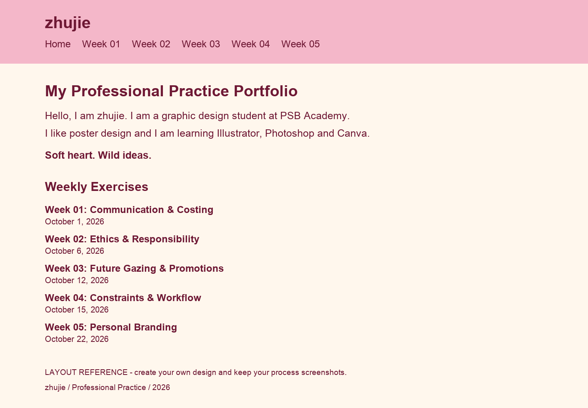

Exercise 01A: Communication
Date:
The task is to explain why I want to be a graphic designer and plan a homepage.
Research
- Studio Feixen
Explore expressive typography and the presentation of varied work. Consider how experimentation can coexist with clear navigation.
- Pentagram Work
Review how project names, images and categories help visitors understand a body of work.
- W3C Contrast Minimum
Check legibility: ordinary text needs at least 4.5:1 contrast, with a 3:1 threshold for large text.
Add your own notes, screenshots and actual visit dates.
Process Work
To add: Proposed process. My own sketches and Canva screenshots are still to be added.
- Write and refine the personal motivation below. Count spaces and punctuation.
- Compare three homepage routes: a large wordmark, a poster-led composition, and an asymmetric collage. Draw the alternatives yourself.
- Test cherry wine text on cream, with pink used for emphasis. Keep navigation and dates stable while the expressive title can move.
- Build the selected route in Canva; capture a first draft and one meaningful revision.
- Translate the final idea into a working page and check both phone and desktop layouts.
Final Outcome
Motivation draft / 110 characters
I want to create eye-catching designs that inspire fresh ideas and reflect my playful, thoughtful personality.
Based on zhujie’s stated motivation. Review and rewrite in your own words.

Reflection
Write after completing the work.
- What worked well?
- What did I change, and why?
- What would I improve next time?